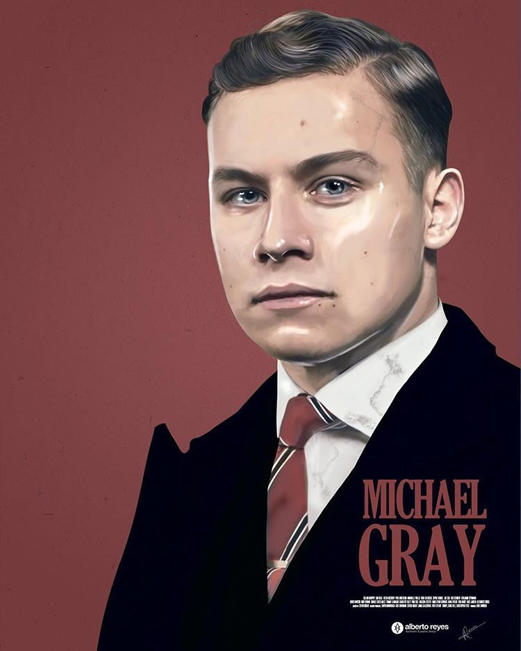
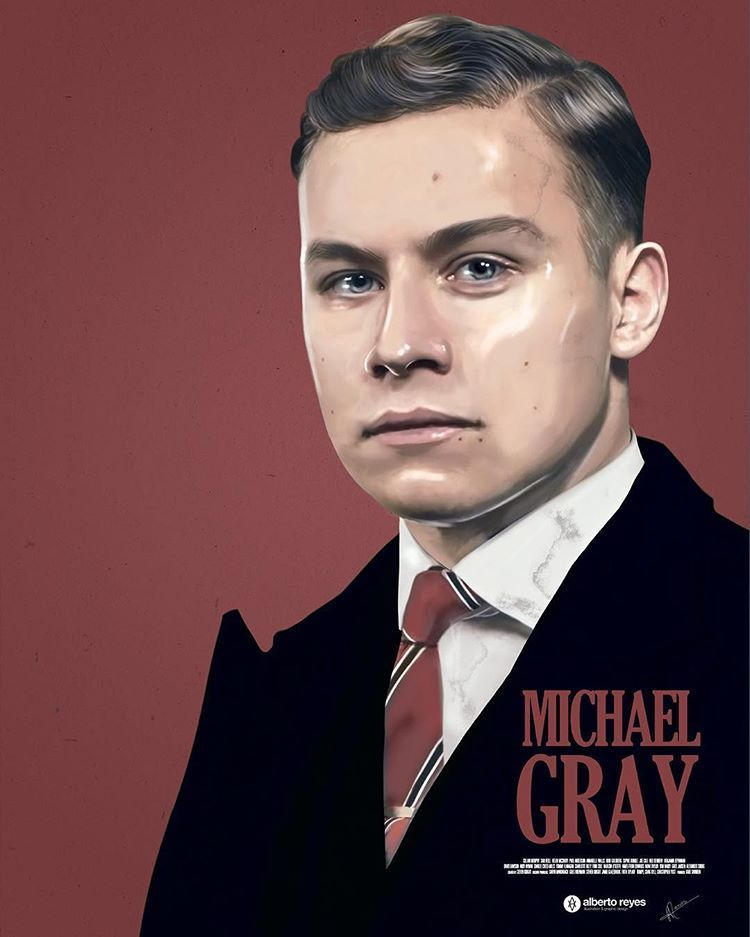

Главные герои

 

Thomas Shelby
"Одна минута перед боем. Солдатская минута. В бою это все, что у тебя есть. Одна минута на все. Все, что было до - бессмысленно, всё, что будет после - бессмысленно тоже... Ничего не сравнится с этой минутой."
Томас Майкл Шелби — лидер преступной группировки "Острые козырьки" из Бирмингема. Глава семьи Шелби. Герой Первой мировой войны. Сражался в битвах при Вердене и Сомме.
Arthur Shelby
«Моя голова как баржа, груженная углем и железом. И когда она накреняется, груз скользит то к одному борту, то к другому, и в конечном итоге — баржа переворачивается. Вот и моя голова, как эта чертова баржа — качается, качается и переворачивается, и я ничего сделать не могу.»
Артур Шелби младший — старший из братьев Шелби, один из самых жестоких членов "Острых козырьков". Заместитель вице-президента "Предприятия братьев Шелби". Правая рука Томаса Шелби в делах "Козырьков" и не только.
John Shelby
— Томми, я хочу, чтобы среди всех людей в мире именно ты оценил мою смелость. — Смелость — это бывать в тех местах, где не бывали другие мужчины.
Джон Майкл Шелби, также называемый Джонни или Джон Бой — третий из братьев и сестер Шелби, член "Острых козырьков"; является одним из трех акционеров Shelby Company Limited. После заключения брака также считается частью семьи Ли..
Polly Gray
— ... он не вернулся. Они никогда не возвращаются. Зачем им это? Ты знаешь эти слова: «Ты шлюха», «Твой ребенок — ублюдок». Но ни одного слова для подлеца, который тебя оставил.
Элизабет «Полли» Грей (урожденная Шелби) - матриарх семьи Шелби, тетя братьев и сестер Шелби, казначей криминальной банды Бирмингема, сертифицированный бухгалтер Shelby Company.
Ada Shelby
Эйда Торн (урожденная Шелби) - четвертый ребенок в семействе Шелби. Единственная женщина среди братьев Шелби
Эйда принадлежит криминальной цыганской семье Шелби. Ее мать умерла, а отец бросил их на произвол судьбы. Вырастила детей тетя Полли.
Michael Gray
"Мы не Острые, чёрт возьми, Козырьки, если мы не вместе."
Майкл Грей - сын Полли Шелби, кузен братьев Шелби; влиятельный и один из высокопоставленных членов Острых Козырьков. Его неназванный отец умер. Майкл работает главным бухгалтером в компании Шелби.
Alfie Solomon
"Интеллект штука хорошая, но часто включается тогда, когда уже поздно."
Альфред «Алфи» Соломонс-младший - лидер еврейской банды, проживавший в Камден-Тауне, Лондон. Подразумевается, что мать Альфи была русской беженкой, откуда была его мать, и он ходил в школу в Лондоне с Дарби Сабини.
Luca Changretta
Лука Чангретта — итальяно-американский криминальный авторитет был старшим сыном Винсента Чангретта (Кеннет Колли) — нью-йоркского криминального авторитета, у которого была вендетта против «Шелби»